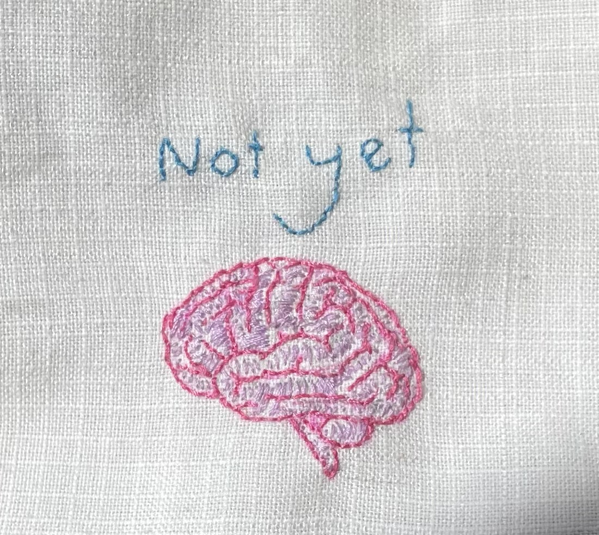

Neuroplasticity
Neuroplasticity is our brains (magical) ability to grow and change in response to its environment and experiences. Understanding the principles of neuroplasticity benefits people by giving context to our learning. Knowing that when you are engaging with something challenging it's actually changing your brain and making you better at that thing supports people to engage with their learning in a healthier way. If we don't know our brain can change we might approach new difficulties as a reflection on our inabilities but, its actually the opposite. Through engaging with difficulties we are creating ability. Just like the experience of weakness when exercising is the development of strength. The experience of mental challenge is the development of the brains’ ability to do that thing. Knowing this helps people have confidence that their efforts are worthwhile and empowers folks to shape their brains by putting in the work to learn new things.
one ways that I would like to engage with the principles of neuroplasticity in my own life is remembering that things take time to learn. That just because I'm not getting something today doesn't mean the energy I'm putting into isn't contributing to my overall learning. In fact it's the opposite, my effort today with what I'm learning makes the breakthroughs I will have later on possible. It's ok not to see all the results straight away, that doesn't mean I’m “bad” at programming or piano or drawing. I just need to give my brain a bit more input and time to organise itself.
There are ways of increasing neuroplasticity, some of them include, learning a language (this makes sense because from experience learning a language has been when I was most mentally challenged.), practising a musical instrument, exploring a new place (or new idea), and making art.
I found this page has tons of really interesting information about neuroplasticity https://positivepsychology.com/neuroplasticity/#learning-neuroplasticity
Growth mindset
Growth mindset is the balief that your abillies can inprove by working on them. Its a way of positively engaging with challenges by telling yourself “I will get better at this”. Its also a way of enjoying the process of learning by seeing the gaps in knowledge as an opportunity to learn. Growth mindset is relevant because when people engage with challenges with a growth mindset there brains are actually engaged and seeking the learning. Its also relevenet because its the difference between defining oneself by their inablities vs engaging with those inabilities and overcoming them. Growth mindset gives people more resilience when coming up against difficulties because they know not being able to do somthing is not static but flexible.
I had a few surprises while looking into growth mindset, the main was realizing that I have had fairly fixed mindset about some things in my life, I’ ve thought that my inablitlies are ‘just who i am’ rather than seeing that they can be improved. I’ve felt scared of being bad at things because I’ve thought they made me dumb. It was a shock to see my attitude so completely laid out and disproved. As someone who didn’t enjoy school, found academics really challenging and was essentially told I was not bright by the education system it was actually a relief to read about growth mindset. I know now my teachers that didn’t believe in me and in tern the me’s that didnt believe in me were wrong.
I hope to integrate growth mindset into every aria of my learning journey. I am looking forward to all the learnings that will take time for me to understand and get, because I can practice giving myself this new story about my abilities being changeable.

I have made this little patch to keep on my desk to remind me that if I havn’t got something yet i will at some point. Not yet opens up the possibility for change and growth.
This resource has a lot more information about growth mindset, near the buttom it has the tedtalk that talks about ‘not yet’. https://positivepsychology.com/growth-mindset-vs-fixed-mindset/
The way I would like these learnings to shape my learning plan is by backing myself- keeping the little patch near by while I’m learning and if Inotice I’m getting dejected to remind myself I am changing my brain right now. With a little more effort I will understand what I am finding hard. I want to keep these concepts key to my learning and apply a growth mindset to the growth mindset.